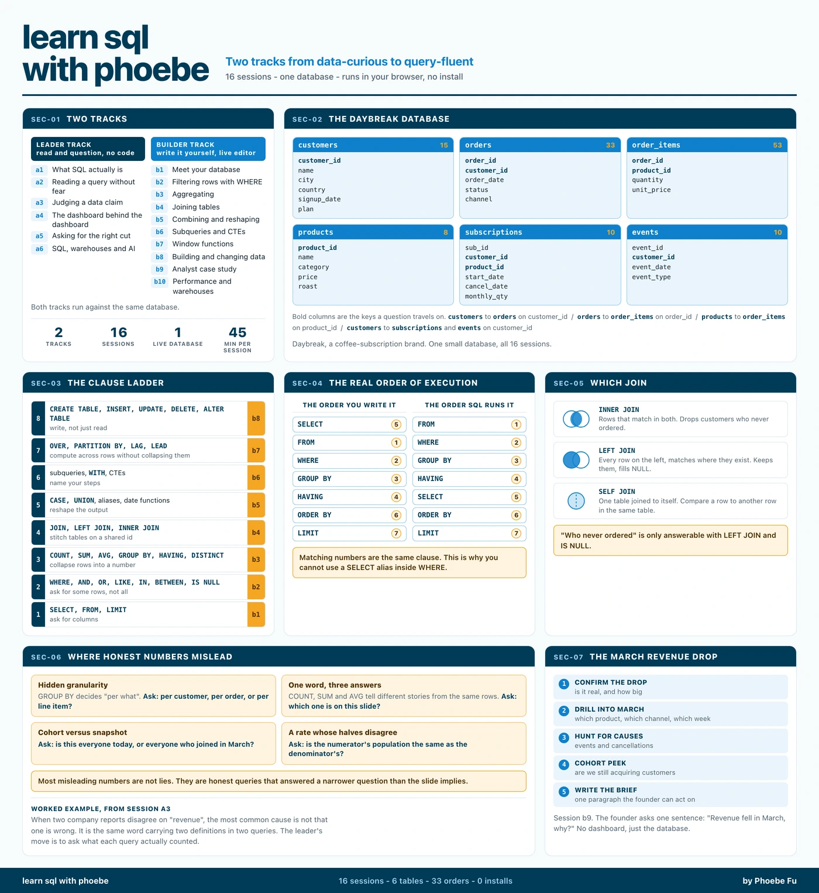

{kind=link}

Read the poster as text (every label, in order)
learn sql with phoebe - course reference poster Two tracks from data-curious to query-fluent 16 sessions - one database - runs in your browser, no install SEC-01 TWO TRACKS Leader track, read and question, no code: a1 What SQL actually is a2 Reading a query without fear a3 Judging a data claim a4 The dashboard behind the dashboard a5 Asking for the right cut a6 SQL, warehouses and AI Builder track, write it yourself, live editor: b1 Meet your database b2 Filtering rows with WHERE b3 Aggregating b4 Joining tables b5 Combining and reshaping b6 Subqueries and CTEs b7 Window functions b8 Building and changing data b9 Analyst case study b10 Performance and warehouses Both tracks run against the same database. SEC-02 THE DAYBREAK DATABASE Daybreak is a coffee-subscription brand. One small database, all 16 sessions. customers, 15 rows: customer_id, name, city, country, signup_date, plan products, 8 rows: product_id, name, category, price, roast orders, 33 rows: order_id, customer_id, order_date, status, channel order_items, 53 rows: order_id, product_id, quantity, unit_price subscriptions, 10 rows: sub_id, customer_id, product_id, start_date, cancel_date, monthly_qty events, 10 rows: event_id, customer_id, event_date, event_type Relationships: customers to orders on customer_id, orders to order_items on order_id, products to order_items on product_id, customers to subscriptions on customer_id, customers to events on customer_id. SEC-03 THE CLAUSE LADDER 1 SELECT, FROM, LIMIT - ask for columns - b1 2 WHERE, AND, OR, LIKE, IN, BETWEEN, IS NULL - ask for some rows, not all - b2 3 COUNT, SUM, AVG, GROUP BY, HAVING, DISTINCT - collapse rows into a number - b3 4 JOIN, LEFT JOIN, INNER JOIN - stitch tables on a shared id - b4 5 CASE, UNION, aliases, date functions - reshape the output - b5 6 subqueries, WITH, CTEs - name your steps - b6 7 OVER, PARTITION BY, LAG, LEAD - compute across rows without collapsing them - b7 8 CREATE TABLE, INSERT, UPDATE, DELETE, ALTER TABLE - write, not just read - b8 SEC-04 THE REAL ORDER OF EXECUTION The order you write it, with the step it actually runs at: SELECT (5), FROM (1), WHERE (2), GROUP BY (3), HAVING (4), ORDER BY (6), LIMIT (7) The order SQL runs it: 1 FROM, 2 WHERE, 3 GROUP BY, 4 HAVING, 5 SELECT, 6 ORDER BY, 7 LIMIT This is why you cannot use a SELECT alias inside WHERE. SEC-05 WHICH JOIN INNER JOIN, rows that match in both. Drops customers who never ordered. LEFT JOIN, every row on the left, matches where they exist. Keeps them, fills NULL. SELF JOIN, one table joined to itself. Compare a row to another row in the same table. The question "who never ordered" is only answerable with LEFT JOIN and IS NULL. SEC-06 WHERE HONEST NUMBERS MISLEAD Hidden granularity. GROUP BY decides "per what". Ask: per customer, per order, or per line item? COUNT, SUM and AVG tell different stories from the same rows. Ask: which one is on this slide? Cohort versus snapshot. Ask: is this everyone today, or everyone who joined in March? A rate whose two halves do not match. Ask: is the numerator's population the same as the denominator's? Most misleading numbers are not lies. They are honest queries that answered a narrower question. SEC-07 THE MARCH REVENUE DROP 1 Confirm the drop: is it real, and how big 2 Drill into March: which product, which channel, which week 3 Hunt for causes: events and cancellations 4 Cohort peek: are we still acquiring customers 5 Write the brief: one paragraph the founder can act on Session b9. The founder asks one sentence: "Revenue fell in March, why?" No dashboard, just the database. 16 sessions - 6 tables - 33 orders - 0 installs by Phoebe Fu